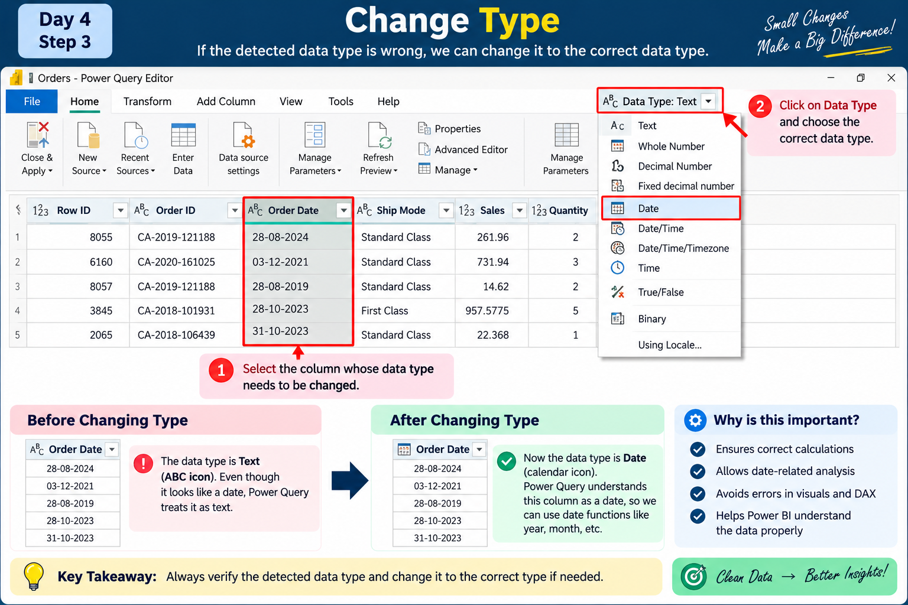

Basic Data Cleaning with Power Query
Data Power BI loki vachina tarvata, report build cheyyadaniki mundu data correct format lo undho verify cheyyali. Ee roju Power Query lo basic data cleaning concepts ni practical thinking tho nerchukundam.
🧠 Data Cleaning enduku important?
Real projects lo source data always perfect ga undadu. Data types wrong ga undachu, unnecessary columns undachu, duplicate records undachu, errors or inconsistent values undachu.
Important: Power Query data ni report/model ki ready cheyyadaniki use chese transformation layer. Cleaning ante random ga columns or values delete cheyyadam kaadu; business requirement ni understand chesi data ni prepare cheyyadam.
⭐ First and important thinking
Business requirement / question → Required data → Transformation → Analysis / Report
Example: Business asks, “Category and Product wise Sales entha?” appudu Category, Product and Sales columns relevant. Requirement ki use leni internal/code columns working query lo unnecessary ayithe remove cheyyachu.
Remember: Power Query lo column remove cheyyadam original Excel/database nunchi permanent ga delete cheyyadam kaadu. Adi query transformation.
Automatic Data Type Detection
Power Query data load chestunnappudu columns ki data types ni automatically detect cheyyadaniki try chestundi. Kani automatic detection ni blindly trust cheyyakunda, verify cheyyali.
Mana Orders data lo sensible types:
- Row ID → Whole Number
- Order ID → Text
- Order Date → Date
- Ship Date → Date
- Ship Mode → Text
- Customer ID → Text
- Customer Name → Text
Common Data Types
Verify the Detected Data Type
Column header daggara unna data type icon ni observe cheyyali. Data actual meaning ki match avutundha check cheyyali.
For example, Order Date date laga use cheyyali. Wrong ga Text ga detect ayithe, manam correct type ki change cheyyali.
Practice: Order Date ni Text → Date ga change chesi, type icon ela change avutundo observe cheyyachu. Correct type already unte, unnecessary ga change cheyyalsina avasaram ledu.
Change Type
Column meeda right-click chesi Change Type option nunchi required data type select cheyyachu.
Example: Text ga unna date column actual date values represent chestunte, Change Type → Date use cheyyachu.

Applied Steps
Power Query Editor right side lo Applied Steps section untundi. Manam perform chesina transformations ni idi record chestundi.
- Source
- Promoted Headers
- Changed Type
- Removed Columns
- Other transformations
Oka step ni revisit cheyyachu, modify cheyyachu, or unnecessary step ayithe remove cheyyachu. So, data ni ela transform chesamo track cheyyadaniki Applied Steps chala useful.
Remove Unwanted Columns — But Based on Requirement
Columns ni random ga remove cheyyakudadhu. Mundu “What question are we trying to answer?” ani ask cheskovali. Tarvata “What data do we need to answer it?” ani decide cheyyali.
Requirement ki use leni columns working query lo unnecessary ayithe remove cheyyachu.
Useful Right-Click Options
💡 Today's Takeaway
- Power Query automatic ga data types detect cheyyagaladu, but analyst should verify them.
- Correct data types analysis and calculations ki important.
- Applied Steps transformations ni track and revisit cheyyadaniki useful.
- Columns ni business requirement/question base cheskoni remove or keep cheyyali.
- Right-click options ni purpose ardham cheskoni use cheyyali—not blindly.